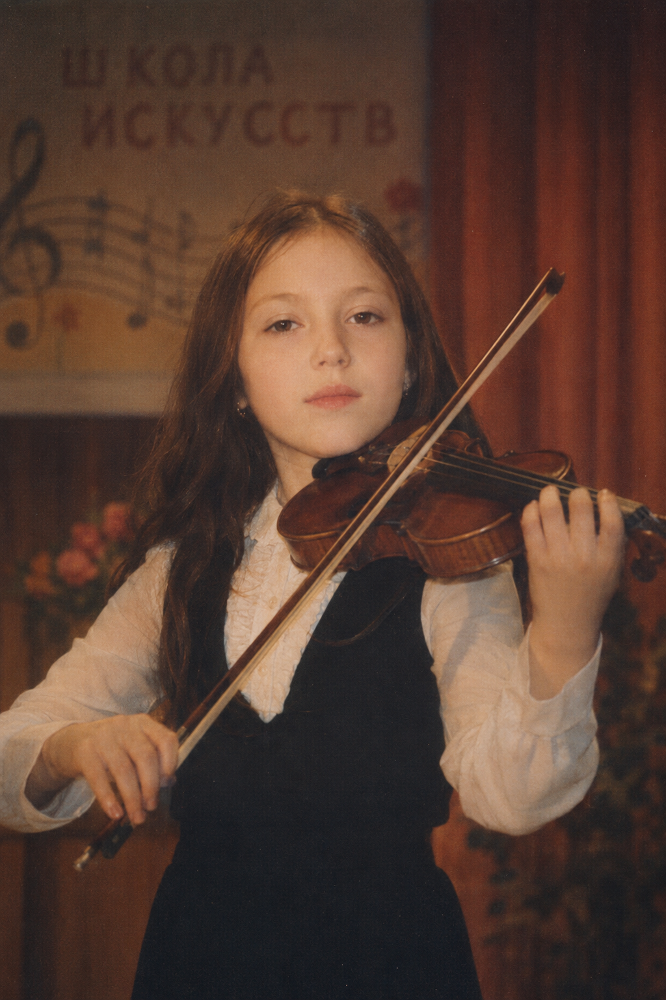
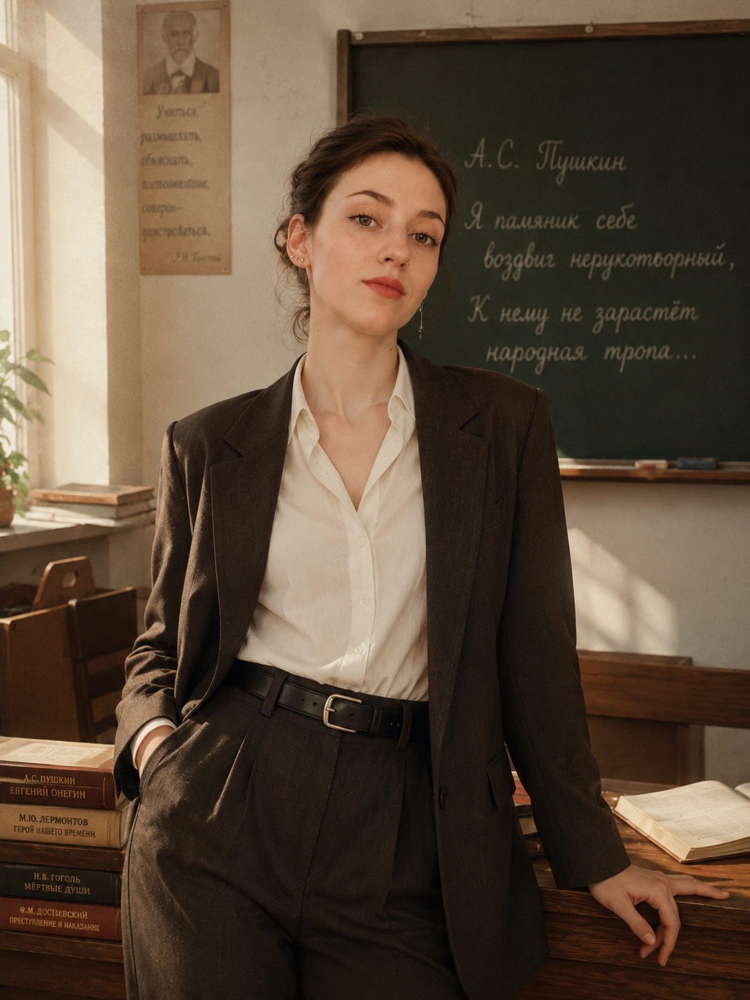
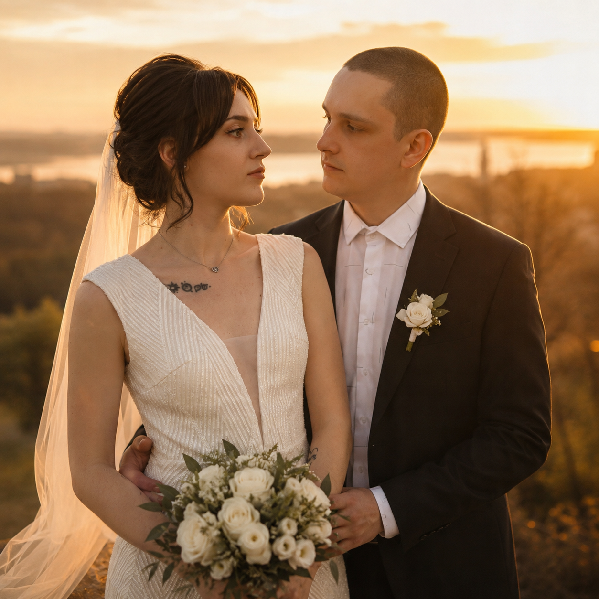
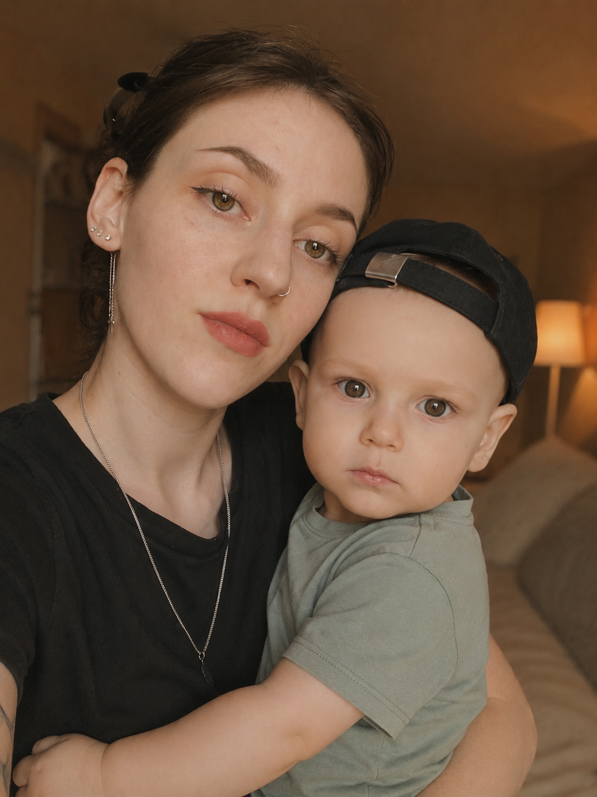
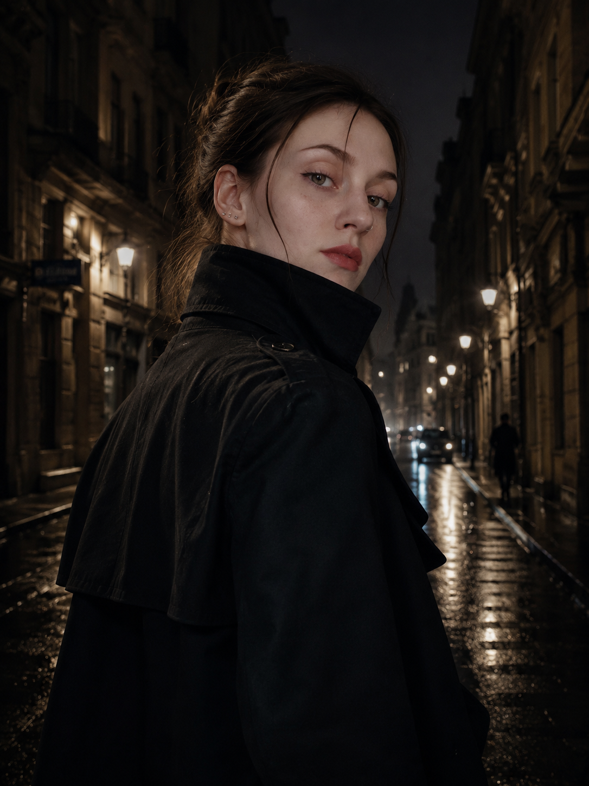
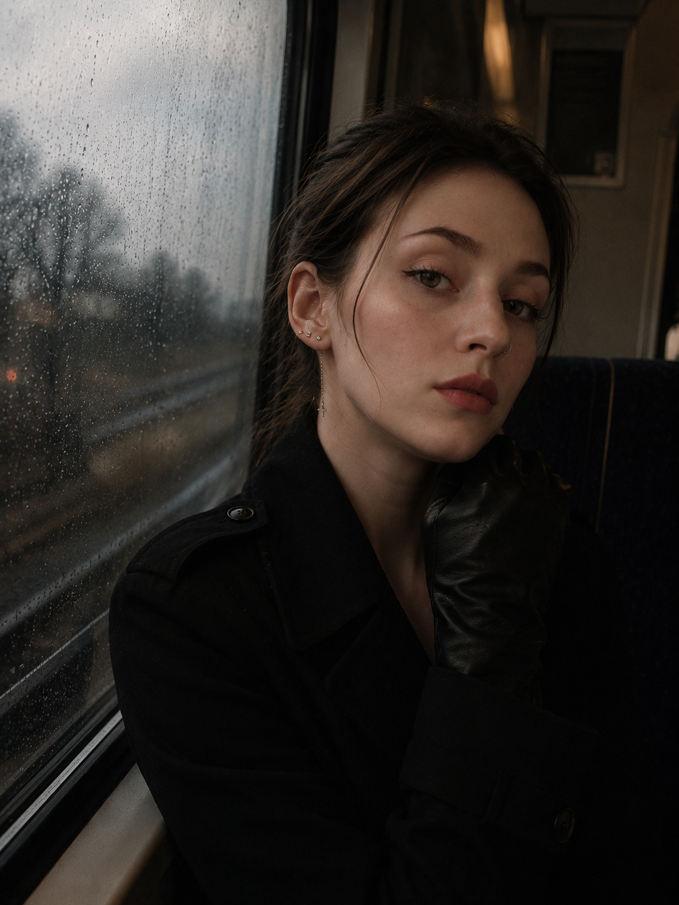
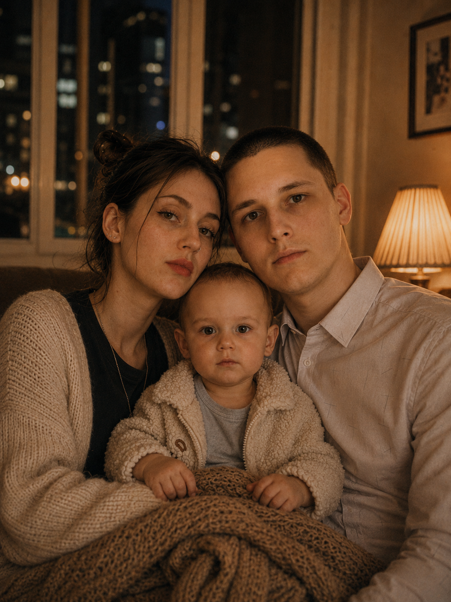
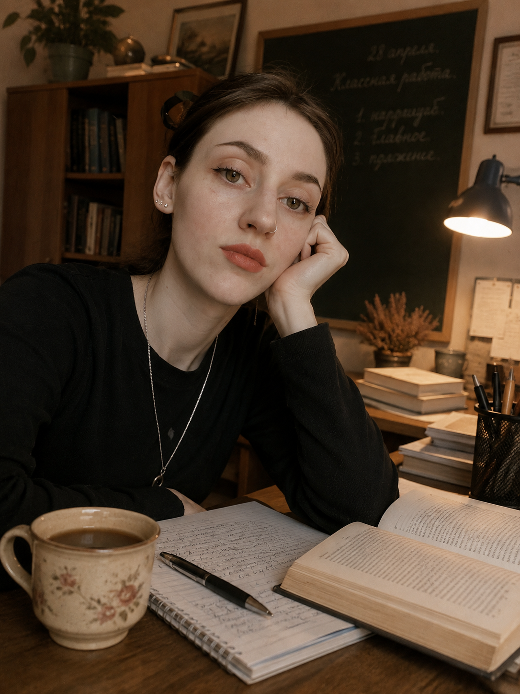
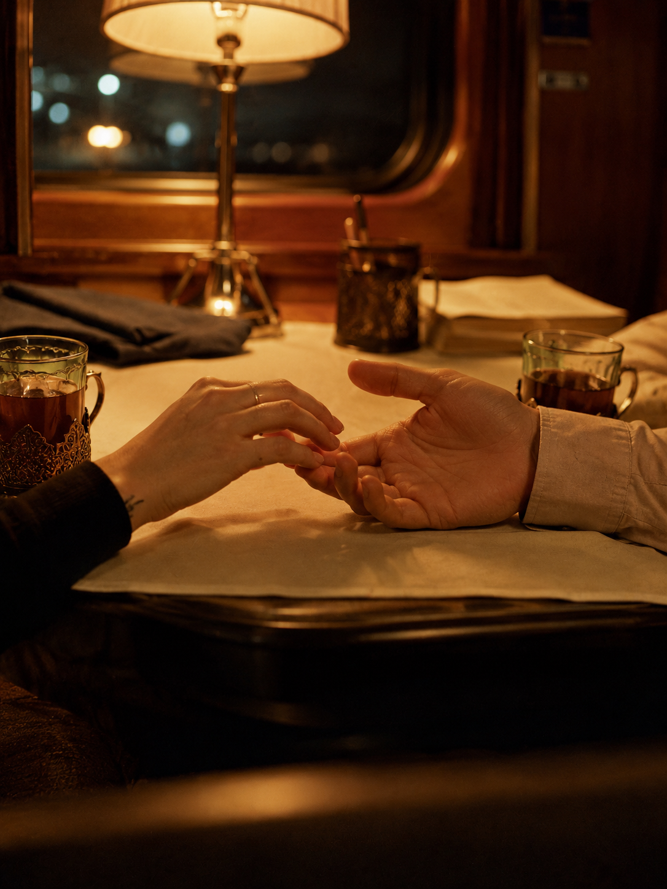
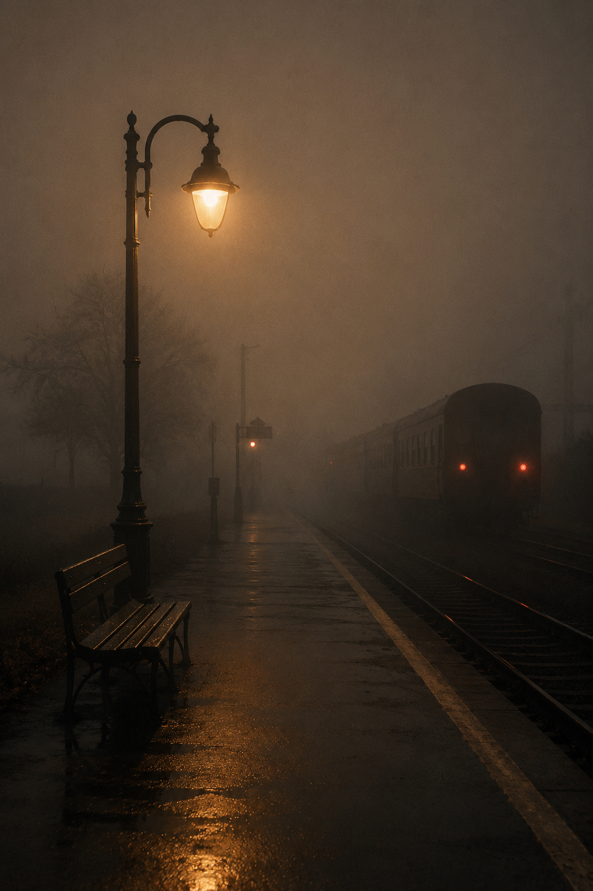

Тысячи туристов ежегодно приезжали сюда ради узких каналов и старинных мостов, мечтая увидеть город, воспетый художниками и поэтами. Для неё Венеция давно превратилась в идеальный лабиринт для исчезновения — в город, где легко потерять человека среди толпы и раствориться в переулках, которым несколько веков.
Сегодня Венеция встретила её проливным дождём.
Она стояла под аркой полуразрушенного дома, подняв воротник тёмного плаща, и разглядывала палаццо на другом берегу канала. Три этажа, золотистый свет в высоких окнах, музыка, дорогие автомобили у входа. Со стороны — благотворительный вечер для богатейших людей Европы. На деле — торги, где предметом сделки была не живопись, а чужие тайны.
— «Ласточка», объект вошёл в здание, — раздался голос куратора в гарнитуре. — До встречи меньше двадцати минут. — Подтверждаю. Визуальный контакт потерян? — Да.
Ей не понравилось это слово. Разведка редко произносит «потерян» просто так — обычно это значит, что кто-то уже начал менять правила игры.
Имя Архитектора звучало в отчётах уже четвёртый год. Сначала его считали мифом, удобным объяснением чужих провалов. Потом провалов стало слишком много, чтобы списывать их на совпадение. Каждый раз, стоило Архитектору появиться в чьей-то жизни, спустя месяцы что-то менялось необратимо: исчезал бизнесмен, гибнул министр, рушился многолетний союз. Ни фотографии, ни ордера — только красная пометка «Приоритет А» в архивах десятка разведок.
Три месяца назад один из внедрённых агентов подобрался к его окружению достаточно близко, чтобы подтвердить существование архива — списка людей, годами покупавших чужие секреты. Не псевдонимы. Настоящие имена, даты, суммы. Агента нашли мёртвым спустя шестнадцать часов. Без следов борьбы. Без переданного архива.
Поэтому в Венецию отправили её. Не потому что она стреляла лучше других и не потому что владела четырьмя языками. Просто она умела не позволять чувствам мешать работе — по крайней мере, так считало начальство. Начальство ошибалось только в одном: чувства у неё были. Она слишком давно научилась держать их так глубоко внутри, что сама иногда забывала, где заканчивается легенда и начинается жизнь.
Сегодня её звали Елена Морозова — преподаватель иностранных языков, гостья на свадьбе университетской подруги. Под этим именем она должна была исчезнуть сразу после операции. План был прост: попасть внутрь, забрать носитель, покинуть Италию, вернуться домой. Такие простые планы почти никогда не срабатывали, и она была почти уверена, что этот вечер не станет исключением.
Служебный вход оказался незапертым ровно тогда, когда должен был. Полноватый мужчина в белом кителе раздражённо взглянул на часы:
— Наконец-то. Переодевайся быстрее.
Через несколько минут она уже несла поднос с бокалами шампанского между гостями, обсуждавшими яхты, фонды и старые деньги. Настоящие разговоры велись не в зале, а за закрытыми дверями западного крыла — туда и указывал сканер, вшитый в поднос.
Западное крыло встретило её тишиной. Толстые стены глушили музыку так, что дворец будто разделился на два разных мира. В одном праздновали. В другом принимали решения, о которых не напишут ни одной газеты.
— Я на позиции, — тихо сказала она в гарнитуру.
Связь оборвалась. Не треск, не помехи — просто тишина. Такое бывает по двум причинам: оборудование вышло из строя или кто-то сознательно заглушил канал. Анализатор частот в кармане мигнул красным. Глушение.
Она осталась одна. Инструкция требовала немедленно уйти. Но инструкции пишут люди, которые сами редко бывают под дождём в чужом городе с чужим именем.
Кабинет в конце коридора оказался пуст — ни движения, ни теплового силуэта, только запах свежего сигарного дыма. Хозяин ушёл за минуту до её появления. На столе стоял бокал виски, лёд ещё не растаял. Она нашла скрытый механизм под столешницей, и из дерева выдвинулся узкий отсек с титановой флеш-картой.
Рядом с картой лежала маленькая фигура — чёрный ферзь из отполированного обсидиана. Тёплый — не от света лампы, а от чужих пальцев, державших его минуту назад. На основании тонкой иглой было выгравировано: «Вы всё-таки пришли». Не «кто-то». Не «агент». Именно «вы» — будто автор заранее знал, кто откроет тайник.
Она не любила совпадения. За семь лет службы усвоила: в настоящих операциях каждая мелочь появляется по чьей-то воле. Если дверь открыта — её открыли. Если карта лежит именно там, где её ждут найти, — значит, кто-то хотел, чтобы она оказалась в этих руках.
Надев перчатки, она подняла накопитель. Ни щелчка, ни растяжки — слишком чисто. И тут в свете фонаря на внутренней стороне отсека блеснула полоска металла — крошечный отражатель. Направленный на стену луч проявил строчку невидимых чернил: «Проверяйте не только то, что лежит на столе. Проверяйте того, кто позволил вам это найти».
Это не могло принадлежать Архитектору — так со своей жертвой не разговаривают, запугивая. Так говорят, когда испытывают. Как учитель, который хочет увидеть, догадается ли ученик решить задачу без подсказки.
За окном, на другом берегу канала, под проливным дождём стоял мужчина. Не прятался под навесом, не курил, не смотрел в телефон. Просто стоял, подняв воротник тёмной куртки, и смотрел прямо на окна кабинета. Расстояние было слишком велико, чтобы разглядеть лицо, но возникло отчётливое чувство: он наблюдал не за дворцом. Он наблюдал за ней. Она моргнула — а когда снова подняла взгляд, фигура уже растворилась в дожде.
Шаги в коридоре заставили её метнуться за книжный шкаф. Трое мужчин вошли неторопливо, без суеты людей, ищущих нарушителя, — эти точно знали, куда идут.
— Её здесь уже нет, — спокойно произнёс мужчина в тёмно-синем костюме, взглянув на открытый тайник. — Значит, всё прошло именно так, как должно было. — Перекрыть город? — спросил один из спутников. — Нет. Пусть карта остаётся у неё.
Не «верните». Не «ликвидируйте». Пусть остаётся. От этих слов у неё похолодело внутри.
— Передайте на вокзал, — добавил мужчина. — Поезд не должен уйти без второго пассажира. Она возьмёт состав до Триеста. После этого вмешиваться запрещено. Когда человек считает, что сам выбирает дорогу, управлять им проще всего.
Он произнёс это не для охраны. Так, будто знал, что фраза однажды дойдёт до кого-то другого. До неё.
Когда шаги стихли, она обыскала кабинет заново — теперь не как хранилище улик, а как место, оставленное специально для неё. В старом томе Макиавелли обнаружился лист с шахматной партией, где чёрные жертвовали очевидным преимуществом ради более крупной цели. За неровно повешенной картиной — сейф с четырёхзначным замком, который открылся, стоило ввести координаты финального хода той самой партии 9928
Внутри — ни денег, ни документов. Только конверт с сургучной печатью в виде чёрного ферзя. Внутри — один лист плотной бумаги:
«Если вы читаете это письмо — вы именно тот человек, которого я ожидал увидеть в этом кабинете. Не тратьте время на поиски Архитектора — сейчас он вам не нужен. Куда важнее понять, почему именно вас отправили за этой картой. И когда сядете в поезд до Триеста — не доверяйте никому. Особенно тому, кто не станет скрывать своего настоящего имени».
Она сложила письмо и убрала во внутренний карман. Где-то в здании коротко взвыла сирена — не пожарная, другая. До отправления ночного поезда оставалось меньше сорока минут.
Она в последний раз посмотрела на чёрного ферзя, оставила его на столе и вышла в дождь — туда, где её уже ждал вокзал, купе номер четыре и человек, чьё имя она пока не знала.
Глава 2
Ночной поезд до Триеста
купе №4 · попутчик не значился в билете
Вокзал пах дождём и раскалённым металлом — так пахнут все европейские вокзалы поздней осенью, когда последний состав готов тронуться, а перрон пустеет на глазах. Она стояла у четвёртого вагона с одним чемоданом, в котором было куда больше смысла, чем вещей, и смотрела на табло: «Триест — 23:47» — строчка из чужого письма, адресованного не совсем ей.
Билет был выписан на Елену Морозову. Легенда была настолько скучной, что в неё невозможно было не поверить: самая надёжная маска не та, что эффектна, а та, о которой не хочется думать дважды. Проводник, пожилой итальянец с усталыми глазами, молча кивнул на билет.
Купе оказалось пустым — два места у окна, одно у двери, лампа с жёлтым абажуром. Хорошо. Она сняла с плеч сумку, устроилась у окна и раскрыла книгу — не потому что собиралась читать, а потому что книга в руках означает «не начинайте разговор» на любом языке мира.
Дверь купе отъехала в сторону без стука.
Он вошёл так, как входят люди, привыкшие, что двери открываются для них сами. Высокий, в тёмном пальто из ткани того особого оттенка, который стоит дороже, чем кажется на первый взгляд, с сумкой, которую он забросил на верхнюю полку одним движением, не глядя — будто делал это в этом самом купе тысячу раз. Когда он развернулся, она увидела его глаза: тёмные, внимательные, с той смешинкой на самом дне, которая обещает либо опасность, либо флирт — а чаще всего и то, и другое сразу.
— Прошу прощения, — сказал он по-английски с едва уловимым акцентом. — Кажется, я в вашем купе. — Это купе не моё, — ответила она, не поднимая глаз от страницы. — Оно принадлежит железной дороге. Я всего лишь временно им пользуюсь. — Тогда я тоже временно им воспользуюсь. — Он сел напротив, закинул ногу на ногу с той спокойной уверенностью, с которой люди привыкли занимать пространство без спроса. — Если вы не возражаете против компании.
Она возражала — почти инстинктивно, на уровне рефлекса. Незнакомец в замкнутом пространстве на восемь часов ночного пути был переменной, которую полагалось либо контролировать, либо устранять. Но что-то в том, как он произнёс «компания» — без нажима, с усталой вежливостью человека, который и сам не в восторге от необходимости делить купе с посторонним, — заставило её просто пожать плечами и вернуться к книге.
Поезд дёрнулся, тронулся, вокзал растворился в темноте за окном. Она читала — или делала вид, что читает, — а краем сознания фиксировала всё: как он снял пальто и аккуратно повесил его, не бросив; как на запястье у него были часы без единой царапины, хотя выглядел он так, будто последние сутки провёл не в отеле, а в дороге; как от его манжеты на долю секунды повеяло чем-то знакомым — кедром, бергамотом, лёгкой ноткой табака. Тот же запах, что стоял в кабинете дворца час назад.
Она отложила эту мысль в дальний угол памяти — туда, где хранились подозрения, которым пока не хватало доказательств.
— Вы всегда так пристально изучаете попутчиков, — сказал он вдруг, не отрывая взгляда от окна, — или это я удостоился особого внимания?
Она захлопнула книгу — не резко, скорее демонстративно.
— Профессиональная деформация. Я преподаю языки. Приходится быстро считывать людей: кто хочет учиться, а кто просто хочет, чтобы за него сделали домашнюю работу. — И к какой категории вы отнесли меня? — Вы ещё не открывали рта достаточно долго, чтобы я определилась.
Он рассмеялся — коротко, но по-настоящему, без вежливой имитации, которую она слышала на сотне приёмов. Смех отразился в глазах прежде, чем добрался до губ. Редкая честность у человека, одетого так, будто честность — последнее, чем он зарабатывает на жизнь.
— Данте, — представился он, протянув руку. — Просто Данте, без биографии, если позволите. Ночные поезда хороши именно тем, что в них не обязательно быть кем-то целиком.
Слова из письма всплыли в памяти так резко, будто их произнесли вслух: «не доверяйте никому, особенно тому, кто не станет скрывать своего настоящего имени». Она пожала протянутую руку — крепкое рукопожатие, ладонь чуть шершавая, не та, что у человека, всю жизнь проведшего за письменным столом. На костяшке указательного пальца — едва заметный серый след, будто от карандаша или графита. Она читала о подобном в справке по особым приметам: такой след иногда оставляют шахматисты, часами держащие фигуры во время турнира.
Слишком много совпадений для одного вечера.
— Елена, — назвала она то имя, что было в билете.
Она почувствовала лёгкий укол — не вины, а странной неловкости, будто солгала не поезду и не случайному попутчику, а самой себе.
За окном тянулись огни маленьких станций, которые поезд проходил без остановки — вспышка света, силуэты домов, и снова темнота. Разговор тёк странными зигзагами: он спрашивал про итальянскую грамматику, она отвечала полусерьёзно; она спрашивала, куда он едет, он уходил от ответа с лёгкостью человека, который делает это не в первый раз — и делает красиво.
— А вы часто ездите этим маршрутом? — спросила она, стараясь, чтобы вопрос прозвучал случайно. — Достаточно часто, чтобы знать, в каком часу проводник разносит кофе, и недостаточно часто, чтобы вам было скучно слушать про это.
Он не солгал и не ответил — искусство, которым, как она знала по опыту, владеют либо дипломаты, либо люди её собственной профессии.
Где-то после полуночи, когда за окном не осталось ничего, кроме черноты и редких огней, она поймала себя на мысли, что впервые за долгое время не считает расстояние до аварийного тормоза и не прикидывает, сколько шагов до соседнего вагона. Она просто сидела напротив незнакомца в пальто дороже её месячной зарплаты по легенде и слушала, как он рассказывает о городе, в который они оба, кажется, ехали не за тем, за чем говорили друг другу.
Мурашки, пробежавшие по спине, когда их взгляды встретились в третий или четвёртый раз за этот час, она не потрудилась объяснить ни одной формулой из профессионального арсенала. Поезд шёл дальше, в темноту, туда, где расписание перестаёт иметь значение — а вопросы, которые она собиралась задать этому человеку, только начинали копиться.
Глава 3
То, что не рассказывают в поездах
после полуночи · стены тоньше, чем кажется
Его звали Данте — по крайней мере, так он представился, а она отлично знала цену именам, которые называют в поездах незнакомцам. Проводник принёс кофе и тихо удалился, оставив их наедине с покачивающимся вагоном и разговором, который петлял между винами, городами и людьми, которые слишком много помнят и слишком мало прощают.
— Вы всегда так внимательны к деталям? — спросил он, заметив, как она отследила взглядом проводника, дважды прошедшего мимо купе без причины. — Только к тем, что могут меня убить. Или удивить. Вы, кажется, претендуете сразу на обе категории.
Он снова рассмеялся — и снова этот смех показался ей опасно настоящим. Она отметила это как факт, требующий дальнейшего наблюдения, и не стала вносить в мысленный отчёт то, как у неё при этом сжалось в груди.
— Что заставило вас поехать в Триест, — спросил он, — если вы читаете людей лучше, чем большинство моих знакомых из совета директоров? — Свадьба подруги, — соврала она гладко, слишком гладко для человека, у которого якобы не было причин лгать. — А что заставило вас сесть именно в это купе? — Купе выбрало меня. Так иногда бывает с важными вещами.
Она посмотрела на него внимательнее. При тусклом свете лампы на его лацкане на мгновение блеснула запонка — тёмный овал, слишком простой, чтобы быть случайным украшением, слишком неприметный, чтобы быть просто украшением вообще. Она не успела разглядеть форму: он поправил манжету, и запонка скрылась в тени рукава.
Ферзь, подумала она. Или ей просто хотелось, чтобы это был ферзь, потому что тогда все крупицы вечера сложились бы в одну картину, а не в десяток разрозненных подозрений.
— Расскажите мне что-нибудь настоящее, — сказал он вдруг, без той лёгкости, с которой вёл разговор до этого. — Не для протокола. Не для попутчика, которого вы больше никогда не увидите. Просто чтобы я знал: сегодня в этом купе был хотя бы один честный момент.
Она могла отшутиться. Умела делать это профессионально — превращать любой личный вопрос в анекдот, которым можно поделиться за ужином и не сказать ни слова правды. Но что-то в стуке колёс, в позднем часе, в том, что она весь вечер провела, разгадывая чужую игру, заставило её ответить иначе.
— Я засыпаю с тревогой и просыпаюсь с ней же, — сказала она тихо. — Я помню обиды десятилетней давности так отчётливо, будто это случилось вчера. И где-то очень далеко отсюда есть люди, ради которых я возвращаюсь домой из любой темноты, куда бы меня ни занесло. — Значит, у вас есть дом, — сказал он тихо. — У меня есть якорь. Дом — это то, к чему я всегда возвращаюсь, что бы ни случилось этой ночью. — Тогда эта ночь ничего не должна дому, — ответил он. — Она принадлежит только поезду.
Она не спорила. Впервые за долгое время ей не хотелось быть правой.
— А что настоящее можете рассказать вы? — спросила она, отчасти в отместку, отчасти потому что действительно хотела знать.
Он долго молчал, глядя в окно, где отражались они оба — два силуэта на фоне несущейся во тьме земли.
— Я слишком долго живу среди людей, которые считают, что контролируют события, — сказал он наконец. — И знаю, что чаще всего происходит обратное: события выбирают, кого из нас использовать. Мы просто потом убеждаем себя, что сами приняли решение.
Фраза показалась ей странно знакомой. Слишком похожей на слова, сказанные мужчиной в тёмно-синем костюме там, в кабинете дворца: «Когда человек считает, что сам выбирает дорогу, управлять им проще всего».
Она сжала в кармане ключи, цепляясь за холодный металл, чтобы скрыть внезапно участившийся пульс.
— Вы говорите как человек, который давно перестал верить в совпадения, — сказала она осторожно. — Я верю в совпадения ровно настолько, насколько верю в честных попутчиков в ночных поездах, — ответил он с намёком на улыбку, которая ничего не объясняла и не отрицала.
Разговор снова свернул в сторону — обсуждали Триест, старую австро-венгерскую архитектуру, кофейни на набережной, где, по его словам, подают эспрессо, достойный отдельного романа. Она слушала вполуха, потому что часть её сознания продолжала методично складывать факты: запах кедра и бергамота, графитовый след на пальце, овальная запонка, фраза о людях, которые не выбирают, а их выбирают.
Каждая деталь по отдельности значила немного. Все вместе они начинали складываться в контур человека, слишком похожего на того, кто стоял под дождём на другом берегу канала несколько часов назад. Она вспомнила, как учили её на первых курсах академии: одна улика — случайность, две — совпадение, три — уже закономерность, которую глупо игнорировать. У неё в активе было четыре: запах, графит, запонка и фраза о людях, которых выбирают события. Профессиональная часть сознания уже требовала составить план действий на случай, если её выводы подтвердятся. Другая часть, гораздо менее профессиональная, просто хотела ещё немного посидеть в этом жёлтом свете лампы и не думать ни о каких планах вообще.
— Вы сейчас смотрите на меня так, будто решаете сложную задачу, — заметил он. — Профессиональная привычка, — повторила она свою прежнюю фразу, на этот раз с меньшей уверенностью. — Тогда позвольте мне облегчить задачу, — сказал он, наклонившись чуть ближе, так что тёплый свет лампы упал на половину его лица, оставив вторую в тени. — Спросите то, что действительно хотите спросить, Елена. У нас впереди ещё несколько часов пути, и мне кажется, вопрос жжёт вам язык уже минут двадцать.
Она встретила его взгляд и на мгновение позволила себе подумать: что, если просто спросить прямо? Что, если назвать вслух и Венецию, и ферзя, и кабинет с двусторонним зеркалом? Инстинкт, отточенный годами, тут же заглушил порыв — не здесь, не в замкнутом купе на скорости сто двадцать километров в час, без связи с куратором и без плана отхода.
— Я хотела спросить, — сказала она вместо этого, — не жалеете ли вы, что выбрали купе, в котором нельзя быть кем-то целиком.
Он посмотрел на неё долго — так долго, что стук колёс стал единственным звуком в комнате, — и тихо ответил:
— Иногда, — ответил он после долгой паузы, — больше всего устаёшь не от опасности, а от необходимости постоянно быть разными людьми. И вдруг встречаешь человека, рядом с которым впервые за долгое время хочется перестать выбирать маску.
Он посмотрел ей прямо в глаза.
— Нет. Сегодня я не жалею.
Она не нашлась, что ответить. А поезд шёл дальше, унося их обоих в темноту, где вопросы множились быстрее, чем находились ответы.
Глава 4
Триест не наступит до утра
купе №4 · свет погашен, граница ещё далеко
После полуночи поезд будто замедлил само время. Свет в коридоре пригасили, проводник давно перестал проходить мимо, а дождь, начавшийся ещё в Венеции, теперь просто шёл где-то далеко за окном, отгороженный от них двойным стеклом и негромким стуком колёс.
Она отставила пустую чашку и поняла, что уже несколько минут молчит, просто разглядывая его лицо в неровном свете лампы — линию скул, тень щетины, ту привычку чуть щуриться, когда он собирался сказать что-то, чего сам от себя не ожидал. За окном изредка мелькали редкие огни — одинокий дом на холме, шлагбаум на переезде, фара встречного состава, — и в эти секунды свет выхватывал его лицо из полутьмы так резко, что казалось, будто она видит его впервые.
— Вы делаете это специально, — сказала она наконец. — Что именно? — Молчите так, будто молчание — это тоже способ говорить. — Возможно, потому что то, что я хочу сказать, плохо переводится на английский, — ответил он, и в его голосе впервые за вечер не осталось ни капли той лёгкой иронии, с которой он держал разговор до этого. — И на итальянский тоже. И, боюсь, ни на один язык, который вы преподаёте. — Тогда попробуйте без перевода.
Он не ответил словами. Он просто протянул руку — медленно, будто оставляя ей время передумать, — и коснулся кончиками пальцев её запястья, там, где бился пульс, отсчитывающий уже не минуты до Триеста, а что-то совсем другое.
Она могла отстраниться. Годы подготовки научили её десяткам способов сделать это красиво, не разрушая легенду, не показывая ни тени слабости. Она успела подумать о протоколе, о правиле не подпускать посторонних ближе вытянутой руки, о всех инструктажах, которые в этот самый момент звучали в её голове настойчивее обычного. Вместо этого она позволила себе то, что не позволяла себе очень давно, — просто остаться на месте и не считать, сколько шагов до аварийного тормоза.
— Это плохая идея, — сказала она тихо, не отнимая руки. — У меня их было немного за последние годы, — так же тихо ответил он. — Позвольте мне ошибиться хотя бы раз красиво.
Пауза между ними стала почти осязаемой. Поезд едва заметно качнулся на стрелке, и жёлтый свет лампы дрогнул, словно тоже не решался задерживаться на их лицах. Она не отвела взгляда. Если ещё минуту назад это был поединок, то теперь никто уже не пытался победить.
Он не сдвинулся с места. Лишь чуть подался вперёд, опираясь локтем о край столика между ними. Теперь их разделяли не столько сантиметры, сколько молчание. Она тоже наклонилась, сама не заметив этого, будто разговор требовал быть услышанным только на таком расстоянии.
— Последний шанс передумать, — произнёс он почти шёпотом.
Она усмехнулась уголком губ.
— Вы всё ещё думаете, что это вы принимаете решения?
В его взгляде мелькнуло что-то опасное — не самоуверенность, а удовольствие от того, что она не уступила. Он медленно поднял руку, словно заранее оставляя ей возможность остановить его. Кончики пальцев коснулись выбившейся пряди у её виска и бережно убрали её за ухо. Прикосновение оказалось почти невесомым, но она почувствовала его так отчётливо, будто между кожей и его пальцами не осталось воздуха.
Его ладонь на мгновение задержалась у линии её шеи. Не удерживая, не требуя, лишь спрашивая без слов. Сердце билось слишком громко. Не от страха. От осознания, что впервые за очень долгое время рядом сидел человек, которого она не могла просчитать до конца.
— Это и правда плохая идея, — тихо повторила она.
— Безусловно.
— Мы оба это понимаем.
Он улыбнулся едва заметно.
— Именно поэтому я всё ещё не пересёк эту границу.
Она посмотрела сначала на его губы, потом снова ему в глаза.
— Лжёте.
Он тихо выдохнул. Поезд снова качнулся, совсем немного. Столик между ними перестал казаться преградой. Он медленно сократил последние сантиметры, не отрывая от неё взгляда, будто всё ещё ждал разрешения, которое уже получил. Их лбы почти соприкоснулись. Несколько бесконечно долгих секунд он просто смотрел на неё так близко, что она различала золотистые искры в его радужке и едва уловимый аромат кедра с горькими цитрусовыми нотами.
Когда его губы коснулись её виска, это было похоже не на поцелуй, а на вопрос, который он не решился произнести вслух. Она закрыла глаза лишь на мгновение и почувствовала не привычную сдержанность профессионала, просчитывающего последствия, а что-то куда более простое и оттого более опасное: облегчение. В момент этого облегчения она и сама не заметила, как чуть повернула голову. Их губы встретились осторожно, будто оба всё ещё оставляли друг другу возможность остановиться. Но уже через секунду стало ясно: никто этого не сделает.
Дальнейшее принадлежало только этому купе, качающемуся вагону и погашенному свету — тому пространству между главами, где рукопись предпочитает молчать, а не подбирать слова. Стук колёс стал единственным свидетелем. Дождь за окном не прекращался, город медленно исчезал позади, а вместе с ним — на несколько часов — исчезли и её позывной, и её легенда, и всё, что она обычно носила как броню.
Утро пришло слишком быстро, как приходит всегда после ночей, которые хочется растянуть.
Она проснулась первой. За окном светлело — не яркий рассвет, а тот блёклый серый час, когда небо ещё не решило, каким будет день. Данте спал рядом, откинув руку так, будто во сне не существовало ни одной причины для тревоги, и, глядя на него, она поняла: впервые за очень долгое время тревоги не было и у неё. Она позволила себе несколько минут просто наблюдать — за тем, как ровно поднимается и опускается его грудь, за тем, как утренний свет постепенно проявляет черты его лица, за тем, каким незащищённым выглядит человек, привыкший всегда держать лицо непроницаемым.
Часть её, та самая, что семь лет училась не доверять красивым совпадениям, уже начинала просыпаться вместе с рассветом и требовать объяснений. Но ещё несколько минут она позволила себе просто быть человеком, а не агентом, разбирающим утро на факты.
Она осторожно приподнялась на локте, стараясь не потревожить его сон, и её взгляд упал на его руку, лежащую поверх пальто, брошенного на соседнее сиденье. На безымянном пальце — тонкое кольцо тёмного металла, которое вчера пряталось в тени и которое она не успела как следует рассмотреть в полумраке. Теперь, в сером утреннем свете, форма читалась безошибочно.
Небольшая шахматная фигура. Ферзь.
Она замерла, не дыша, и почувствовала, как внутри что-то холодное и трезвое возвращается на своё привычное место — туда, где всю ночь была только теплота и позволение себе забыться.
Совпадения не бывают такими точными. Не бывают такими своевременными. И, глядя на спящего рядом мужчину, она впервые за много часов вспомнила не его голос и не то, как он произнёс «позвольте мне ошибиться хотя бы раз красиво», а строчку из письма, найденного в тайнике дворца: «не доверяйте никому, особенно тому, кто не станет скрывать своего настоящего имени».
Он назвал ей своё имя в первую же минуту.
Поезд тем временем замедлял ход — за окном начинали проступать очертания какой-то станции, которой, судя по расписанию в её памяти, здесь быть не должно.
Глава 5
Станция, которой не было в расписании
на рассвете · выбор длиной в одну платформу
Поезд дёрнулся и встал там, где, судя по расписанию, останавливаться не должен. За окном не было ни таблички с названием, ни привычной толпы пассажиров — только пустой перрон, мокрый после ночного дождя, и одинокий фонарь, качающийся на ветру.
Данте уже не спал. Он сидел, застёгивая манжету, и, кажется, не удивился остановке ни на секунду — что само по себе было ответом на вопрос, который она пока не решалась задать вслух.
— Ваш ферзь, — сказала она наконец, кивнув на кольцо на его пальце, стараясь, чтобы голос прозвучал ровно, как будто она спрашивает о погоде. — Красивая вещь. Обсидиан?
Он посмотрел на кольцо так, будто на секунду забыл, что оно у него есть, а потом перевёл взгляд на неё — уже без вчерашней смешинки, зато с чем-то похожим на уважение.
— Вы заметили ещё вчера, — сказал он. Не вопрос. Утверждение. — Я заметила ещё в Венеции, — ответила она, и слова прозвучали резче, чем она рассчитывала. — Под дождём, на другом берегу канала. Человек в тёмной куртке, который смотрел не на дворец. На меня.
Тишина, повисшая в купе, была плотнее любого молчания, которое было между ними ночью.
— Значит, письмо в сейфе тоже написали вы, — продолжила она, наблюдая за его лицом с той же холодной точностью, с которой обычно наблюдала за объектами. — «Не доверяйте никому, особенно тому, кто не станет скрывать своего настоящего имени». Вы назвали своё имя в первую же минуту. Специально. Чтобы я потом сама сложила два и два — но уже слишком поздно, чтобы это имело значение.
Он не стал отрицать. Не стал изображать удивление, не потянулся за спасительной шуткой, которой обычно прикрывался весь вечер.
— Я не работаю на Архитектора, — сказал он тихо. — Если это первое, что вас беспокоит. — Тогда на кого вы работаете? — На тех, кому нужно было убедиться, что человек, отправленный за архивом, не сломается на первом же испытании. Что вы способны заметить деталь, которую другой на вашем месте пропустил бы. Что вы не потеряете голову даже тогда, когда очень хочется её потерять.
Она почувствовала, как внутри поднимается что-то среднее между яростью и облегчением — и не смогла с уверенностью сказать, какого чувства больше.
— Значит, вся эта ночь была частью проверки, — сказала она ровно. — Ночь — нет, — ответил он, и впервые с начала разговора в его голосе прозвучало что-то незащищённое. — Купе — да. То, что я должен был сесть именно сюда и заговорить именно с вами, — да, это было частью задания. Остальное я не планировал. И меньше всего планировал то, что не смогу сожалеть об этом ни секунды, даже сейчас, когда вы смотрите на меня так, будто я враг. — А вы враг? — Я человек, который влюбился в задание в процессе его выполнения, — сказал он с горькой полуулыбкой. — Что, по всем стандартам моей профессии, делает меня наименее надёжным человеком в этом купе.
Она отвернулась к окну, туда, где на пустом перроне фонарь продолжал раскачиваться на ветру, и попыталась разложить услышанное на факты — привычка, которая обычно помогала ей не тонуть в эмоциях. Факт первый: он знал о Венеции. Факт второй: письмо в сейфе принадлежало ему или тем, кто стоял за ним. Факт третий: несмотря на всё это, ни один жест этой ночи не был фальшивым — по крайней мере, не больше, чем весь остальной мир, в котором она жила последние семь лет.
— Останьтесь на этой станции, — сказал он тихо, поднявшись и протянув ей руку — не как незнакомец из вагона, а как человек, готовый предложить целую другую жизнь, если она скажет одно слово. — Дайте мне доказать, что дом можно построить и здесь, а не только там, куда вы возвращаетесь после каждого задания.
Она посмотрела на его раскрытую ладонь. На секунду — только на секунду — представила, каково это: сойти на этом безымянном перроне, оставить позади и легенду, и настоящее имя, и архив, спрятанный во внутреннем кармане, и просто исчезнуть вдвоём в городе, которого даже нет в расписании.
— Дом уже построен, — ответила она, и голос впервые за всю ночь дрогнул. — Я не строю его заново. Я в него возвращаюсь. Там сын, которому нет ещё и двух лет и который не знает, что мама всё это время была не в командировке, а на другом конце Европы вытаскивала чужие тайны из тайников. Там муж, который ни разу не спросил лишнего, хотя, думаю, давно обо всём догадался. Я не собираюсь менять эту жизнь на самую красивую ночь в поезде, даже если эта ночь была настоящей. — Тогда почему мне кажется, что вы всё ещё не уверены до конца? — тихо спросил он, не опуская руки. — Потому что я не робот, Данте, — ответила она. — Я просто хорошо умею выбирать, даже когда выбор мне не нравится.
Он медленно опустил руку, шагнул к двери купе и, не оборачиваясь, вышел в узкий коридор вагона, а оттуда — на мокрый перрон, туда, где раскачивался одинокий фонарь. Что-то в его лице дрогнуло, прежде чем дверь закрылась, — не разочарование, а нечто более сложное, похожее на облегчение вперемешку с сожалением.
Поезд снова дёрнулся, трогаясь с безымянной станции. Фонарь на перроне уплыл назад и растворился в утреннем тумане — вместе с городом, которого никогда не было в расписании, и человеком, который остался стоять там, где секунду назад ещё держал её за руку.
Глава 6
Настоящее имя
эпилог · граница пройдена
Поезд шёл дальше без него.
Она смотрела в окно, пока безымянная станция не растворилась в утреннем тумане окончательно, а потом ещё долго сидела неподвижно, слушая, как колёса отсчитывают километры до Триеста — города, в который она теперь ехала уже не по легенде, а просто потому, что там заканчивался этот участок пути.
Архив по-прежнему лежал во внутреннем кармане, и она наконец позволила себе подумать об этом трезво, без той спешки, с которой обычно анализировала события во время операции. Данте — если это вообще было его настоящее имя — не работал на Архитектора. Работал на кого-то, кому нужно было проверить именно её: способна ли она заметить деталь, не потеряется ли в чужой игре, не сломается ли там, где сломался агент, найденный мёртвым три месяца назад.
Проверка, что ж. Она прошла её — но не так, как задумывали её авторы. Она не влюбилась настолько, чтобы забыть, кто она есть. И не осталась настолько холодной, чтобы сделать вид, будто эта ночь ничего не значила.
В Триесте её встретил куратор — уже без наушника, в обычном плаще, с той озабоченностью на лице, которая появляется у людей, всю ночь просидевших у молчащей рации.
— Мы потеряли связь на три часа, — сказал он вместо приветствия. — Что произошло в Венеции?
— Меня протестировали, — ответила она, протягивая ему флеш-карту. — И, кажется, кто-то наверху хотел убедиться, что я не подведу задание, даже когда меня отвлекают всем, чем можно отвлечь профессионала.
Куратор внимательно посмотрел на неё, но не задал больше ни одного вопроса. В их работе умение не спрашивать лишнего ценилось не меньше умения находить ответы.
Отчёт по операции она написала сама, от руки, как требовал протокол для миссий такого уровня. Про Данте она указала ровно то, что было необходимо для дела: приметы, предполагаемую принадлежность к структуре, курировавшей проверку, отсутствие прямой угрозы. Про всё остальное — про то, как звучал его смех, про запах кедра и бергамота, про кольцо с обсидиановым ферзём — она не написала ни строчки. Некоторые вещи не помещаются в отчёты, даже когда от них зависит твоя дальнейшая карьера.
Домой она вернулась спустя два дня — уже не Еленой Морозовой, а собой. В аэропорту её встречал муж с годовалым сыном на руках, и мальчик, завидев её, замахал руками так отчаянно, будто не видел её не два дня, а два года.
— Как командировка? — спросил муж, забирая у неё сумку и целуя в висок так буднично, будто она вернулась из соседнего города, а не с другого конца Европы, где чуть не осталась стоять на перроне станции, которой нет в расписании.
— Долгая, — ответила она, забирая сына на руки и вдыхая запах молока и детского шампуня — запах, который в тот момент показался ей самым честным ароматом на свете. — Но я всё сделала. И вернулась.
Он не стал спрашивать больше. За годы брака с человеком, чья профессия официально называлась «преподаватель», а неофициально — совсем иначе, он научился слышать в её словах не только то, что произносилось вслух.
Сестре она вечером того же дня написала совсем короткое сообщение — что-то вроде «долетела, всё в порядке, дома всё хорошо» — из тех коротких строчек, за которыми обычно прячется целая непрожитая вслух история. Люба, конечно, ничего не заподозрила: она давно привыкла, что у сестры вечно какие-то командировки, конференции и семинары по методике преподавания, о которых лучше не спрашивать подробностей, чтобы не слушать два часа про особенности сослагательного наклонения в итальянском. Если бы она только знала, что где-то между строк этого будничного сообщения умещалась целая ночь, целый чужой город и человек с кольцом в виде шахматного ферзя.
Вечером, укладывая сына, она на мгновение вспомнила слова, которые Данте сказал в последнюю ночь: «Я человек, который влюбился в задание в процессе его выполнения». Она подумала, что могла бы ответить ему тогда честнее: она тоже влюбилась — не в него и не в поезд, а в ту версию себя, что на одну ночь позволила себе быть кем-то, кроме агента и матери. И именно поэтому смогла сойти с этого поезда, не сходя с него физически, — вернуться домой, не оставив там части себя.
Настоящее имя, решила она, укладывая сына в кроватку, никогда не было тайной, которую нужно защищать любой ценой. Иногда это было просто то, к чему возвращаешься, — как дом, как якорь, как голос сына, зовущего маму посреди ночи. Куда важнее секретного досье оказалось то, что никто из тех, кто читал её личное дело, не знал: что она умеет укачивать ребёнка одной рукой, помешивая борщ другой, и что это умение далось ей труднее, чем весь курс подготовки в академии вместе взятый.
Куратор больше ни разу не упомянул Данте в разговорах — ни во время итогового разбора операции, ни позже, когда архив был передан по назначению, а имя Архитектора начало медленно исчезать из новых сводок, будто кто-то наверху наконец получил то, что искал. Она тоже не спрашивала. Некоторые главы, решила она, лучше оставлять закрытыми — не потому что стыдно, а потому что не всякая история обязана иметь продолжение, чтобы быть настоящей.
Конец романа «Ласточка».
Начало настоящей истории — ниже.
ДОСТУП К ДОСЬЕ АГЕНТА ОГРАНИЧЕН · ВВЕДИТЕ ПАРОЛЬ
ДОСЬЕ ЗАСЕКРЕЧЕНО · ПРОЧТИТЕ РОМАН «ЛАСТОЧКА» ДО КОНЦА, ЧТОБЫ УЗНАТЬ ПАРОЛЬ
АРХИВ ЦРУ · ДЕЛО № TMN-1926-А · ДОСТУП: СЕМЕЙНЫЙ
СОВЕРШЕННО СЕКРЕТНО
ПОД ПРИКРЫТИЕМ
Досье агента, который выбрал любовь
Она учила детей ставить ударения в словах, знала три способа обездвижить человека одной шпилькой для волос — и ни разу не перепутала, в какой из своих двух жизней находится. Это история о девушке, у которой было всё: позывной, диплом экономиста, мать, брат, пельменник, муж, сын — и один нерассекреченный день рождения, 20 июля.
▾ откройте опись дела ▾
Опись документов
Что вы найдёте в этом деле
ДЕЛО 01Личное дело. До того, как всё началось
ДЕЛО 02Легенда: учитель русского и литературы, школа №69
ДЕЛО 03Особые приметы: память, сны и мигрень как побочный эффект таланта
ДЕЛО 04Незапланированная встреча в Барселоне
ДЕЛО 05Агент «Тамомах»: муж, которого назначило Управление
ДЕЛО 06Самый маленький агент в истории Управления
ДЕЛО 07Рапорт об увольнении
ФОТОФотографии из архива
ПИСЬМОЛичное сообщение от куратора «Брат»
РОМАН«Ласточка»: шесть глав отдельного романа
БЛОКНОТВаш собственный роман — страница для Алёны
Дело 01
Личное дело. До того, как всё началось
с. Красноселькупобъект: девочка, которая всегда знала больше, чем показывала
В детстве никто не подозревал ничего. Девочка как девочка — писала стихи, сама сочиняла к ним мелодии, пела так, что бабушки на площадке замолкали, придумывала танцы и разучивала их с целым классом, будто ставила спектакль в оперном театре. По вечерам — скрипка, ровно столько, сколько нужно, чтобы прохожие под окном останавливались и не могли понять, детская школа это или консерватория.
В своём классе она была не просто популярной — она была инстанцией, к которой шли за решением споров. Даже спустя годы одноклассницы пишут ей первыми — потому что человек, который однажды взял на себя роль центра, редко эту роль теряет.
Росли они с сестрой без отца — их вела по жизни мама, иногда подключались бабушка с дедушкой. Именно там, в красноселькупской квартире, будущий куратор из Лэнгли и заметил главное: девочка, которая с пяти лет решала недетские задачи и утешала старшую сестру вместо того, чтобы её об этом просили, — материал штучный. Управлению такие не встречались лет двадцать.
Когда не стало дедушки, она стояла на похоронах ровно — не потому что не было больно, а потому что кто-то в семье должен был остаться опорой. Через много лет это назовут «стрессоустойчивостью, редкой даже для действующих агентов». Тогда это просто называлось «Алёна справится».

Фото-слот · «детство, скрипка, сцена» вставьте сюда изображение — подсказка для генерации ниже
Дело 02
Легенда: учитель русского и литературы, школа №69
Тюмень, школа №69прикрытие: 5 лет без единого прокола
После 11 класса личное дело гласит сухо: «поступила в колледж на экономиста». Это правда только наполовину. На самом деле это был первый спецкурс — умение читать баланс компании и умение читать человека по глазам тренируются, как ни странно, очень похожими методами. Разведке нужны были не экономисты. Ей нужны были люди, которые видят цифры насквозь и не показывают виду.
Экономистом она не стала. Вместо этого — школа №69, русский язык и литература. Идеальное прикрытие: учительская подписывает командировки не хуже дипломатического паспорта, а «поехала к сестре» звучит убедительнее, чем «улетела в Барселону».
Она действительно писала тексты и стихи с детства — и на уроках литературы это чувствовалось: разбор «Евгения Онегина» превращался в лучший урок недели, потому что учитель не пересказывала книгу, а жила в ней, как в одной из своих легенд. Ученики не знали, что их учительница накануне вернулась рейсом через три страны. Знали только, что таких учителей — по одному на школу, если повезёт.
Сын, Тимофей, изменил многое. Декрет стал для Управления неожиданно удобной легендой: кто заподозрит маму в декрете хоть в чём-то, кроме недосыпа?

Фото-слот · «за учительским столом, стопка тетрадей, скрытая уверенность»
Дело 03
Особые приметы: память, сны и мигрень как побочный эффект таланта
гриф: медицинский и оперативный
В личном деле есть раздел, который в Управлении читают с придыханием. Способность прослушать песню один раз — и повторить текст слово в слово, даже если язык ей незнаком. Способность посмотреть фильм дважды — и потом цитировать диалоги так, что кажется, будто она писала сценарий сама. На языке разведки это называется «эйдетическая слуховая память» и стоит дороже любого шифровальщика: перехваченный разговор на арабском она способна повторить дословно, даже не понимая ни слова — и разобрать уже дома, в блокноте, за чаем.
Она внимательна к деталям настолько, что ничего не забывает — в том числе то, что кто-то когда-то был неправ. В разведке это называют «профессиональной памятью на факты», дома это называют «Алёна помнит всё, даже то, что ты сказал в 2019-м».
Есть кое-что, что не описано ни в одном учебнике Лэнгли: сны. Иногда ей снится то, что происходит на самом деле — за день до, за неделю до. Управление списывает это на «повышенную интуитивную обработку данных». Мигрени, которые приходят следом, там же, в скобках, называют «профессиональным заболеванием людей, которые обрабатывают слишком много реальности одновременно». Она и без диплома врача знает о болезнях больше половины терапевтов города — потому что внимание к деталям однажды становится диагностикой.
При этом — тревожится. Не смотрит тяжёлые фильмы, бережёт себя от лишнего груза чужой боли. Даже у людей с самой прочной бронёй есть настройки, которые лучше не трогать, и она это про себя знает и уважает.
операция «Апельсиновый закат»статус: контроль не потерян (почти)
Его звали в отчётах просто «объект Д.» — испанский архитектор, консультант, за которым числилось слишком много удачных совпадений. Встреча была рабочей: коктейль, светская беседа, тридцать секунд на то, чтобы считать всё, что нужно, по его запонкам и наручным часам.
Не сработал план в одном: у объекта оказались смешливые глаза и голос, от которого по спине шли мурашки ещё три квартала после того, как она вышла из отеля. Он проводил её до такси и сказал на плохом русском: «Увидимся, агент». Она рассмеялась впервые за операцию — и внесла в отчёт только: «объект вежлив, угрозы не представляет».
Дома, в приготовленном вручную борще для сестры, эта встреча превратилась в весёлую историю без единого секретного слова. Она умеет так: взять целое опасное задание и рассказать его за столом так, что все хохочут и никто не в курсе, что часть правда.
Объект Д. писал ещё дважды. Ответа не получил. В личном деле у этого есть отдельная пометка, сделанная её же почерком: «интересно, но дома лучше».
Агент «Тамомах»: муж, которого назначило Управление
совместная операцияисход: провал легенды, успех жизни
Правда, которую не узнает никто, кроме читающих это досье: Стас — не просто муж. Стас — напарник, которого ей назначили на операцию «Тамомах» с одной задачей: изобразить семейную пару на два месяца в приграничном городе. Через два месяца оказалось, что изображать больше нечего — всё стало настоящим.
Он был единственным в её жизни, кто не испугался её памяти на детали и её манеры помнить обиды десятилетиями — а сказал, что с человеком, который никогда ничего не забывает, спокойнее всего строить будущее. Он умел готовить хуже неё и не спорил с этим. Он не боялся её мигреней и её вещих снов, а научился на всякий случай держать дома нужные таблетки и не задавать лишних вопросов после слов «мне сегодня приснилось что-то».
Отчёт по операции «Тамомах» оффициально так и не был закрыт. В графе «результат» стоит только одно слово, вписанное от руки поверх печатного бланка: «семья».

Фото-слот · «свадебное или парное фото, тёплый закатный свет»
Дело 06
Самый маленький агент в истории Управления
позывной: «Тимофей»возраст на момент вербовки: 0 лет
В Управлении шутят, что более требовательного объекта охраны у неё ещё не было. Тимофей появился на свет и сразу занял высшую должность во всех её списках приоритетов — выше директора, выше легенды, выше самой операции. Впервые за карьеру рапорт о невыходе на задание она написала без единого сомнения.
Теперь дисциплина, которой она славилась в разведке — режим, порядок, ни одной пропущенной детали — работает на кухне и в детской. Та же собранность, с которой она когда-то запоминала маршруты отхода, теперь помнит, когда у сына режутся зубы и что он ел вчера на обед. Это тоже своего рода оперативная работа — просто самая важная из всех, что у неё когда-либо были.
А между делом она всё равно находит время накраситься, уложить волосы и выйти из дома так, будто всё ещё идёт на задание — потому что даже отставной агент имеет право выглядеть безупречно.

Фото-слот · «нежное фото мамы с малышом на руках, домашний тёплый свет»
Дело 07
Рапорт об увольнении
кому: директору Управленияот кого: агент, позывной засекречен даже здесь
«Прошу освободить меня от занимаемой должности. Причина: нашла то, ради чего не жалко ни одной уже добытой тайны. Прикрытие — учитель, жена, мама — оказалось не легендой, а единственной настоящей должностью, которую я хочу занимать до конца жизни.
За время службы было многое: города, языки, мужчины с интересными глазами и красивым французским, задания, о которых нельзя рассказать даже сестре. Но каждый раз, возвращаясь домой — к Стасу, к Тимофею, к своей кухне и своим стихам, — я убеждалась, что самая сложная и самая ценная миссия ждёт именно там.
Прошу считать это заявление не поражением, а лучшим отчётом за всю карьеру.»
— Алёна
Заявление подписано, принято, заархивировано под грифом «счастье превыше секретности». Дело закрыто. Жизнь — нет.
Фотоархив
Снимки из дела

images/gallery-1.jpg«агент в тёмном плаще на ночной европейской улице, кинематографично»

images/gallery-2.jpg«элегантная женщина у окна поезда, дождь, драматичный свет»

images/gallery-3.jpg«семейный уютный вечер, мама папа и малыш, тёплый плёночный стиль»

images/gallery-4.jpg«стол с тетрадями, чашкой чая и раскрытой книгой — уютный кабинет учителя»

images/gallery-4.jpg«стол с тетрадями, чашкой чая и раскрытой книгой — уютный кабинет учителя»

images/gallery-4.jpg«стол с тетрадями, чашкой чая и раскрытой книгой — уютный кабинет учителя»
Личное · вне грифа секретности
С днём рождения, Алёна
от: Бро20 июля
Спустя время это будет важно и одновременно с этим совершенно не важно. Достаточно философское начало для поздравления. Думаю, твой возраст уже позволяет воспринимать подобное философское «безобразие» как что-то, в чём есть смысл.
Честно, я начала писать поздравление в самый последний момент — думаю, ты понимаешь, что мои мысли в последнее время заняты одним человеком.
Мне грустно, что я не могу подарить тебе всё, чего бы ты ни пожелала. Грустно, но я ничего с этим не делаю — от этого немного страшно, что в свои 28 я смогла принять собственную финансовую нестабильность. Думаю, тебе это не грозит, но, как и всегда, главное — желание. Думаю, и у меня оно проснётся — как раз к тому времени, когда ты уже выйдешь из декрета. Было бы прикольно поработать вместе в одной школе — тогда бы мы сыграли по-настоящему в «Подруг».
Вернёмся к поздравлению. Видео я делать не стала, но хотелось сделать что-то, что в моих силах, но при этом тоже творческое. Так появилось это досье — с грифом «секретно» и совершенно не секретной любовью внутри.
Люблю тебя, бро.
Личный доступ · только для Алёны
Секретный блокнот агента
Здесь можно писать свои романы, главы, стихи или просто мысли — прямо на сайте. Всё сохраняется в этом браузере автоматически. Для надёжности можно скачать любую запись или весь блокнот файлом.